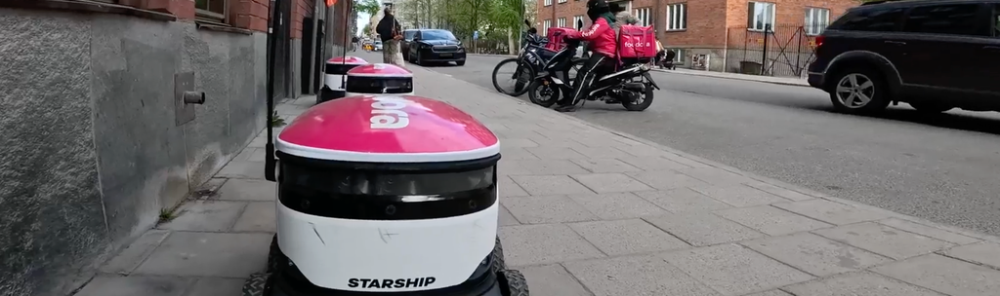

robotsinpublic.org
Research projects investigating human-robot interaction (HRI) in public places

Understanding Robot Autonomy in Public

When delivery robots enter public spaces: A longitudinal study of Starship robots in Stockholm
Drive Sweden project funded by Sweden's Innovation Agency Vinnova